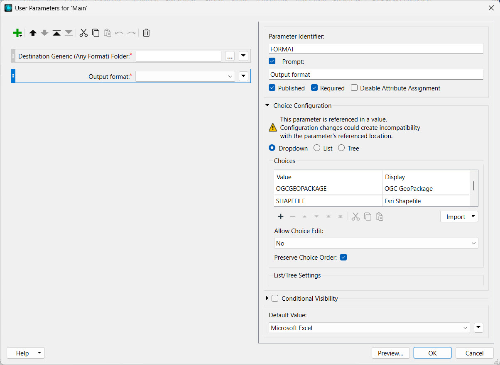
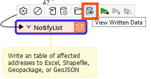

After completing this lesson, you’ll be able to:
As a technical analyst in the GIS department of a city, you are responsible for managing a workflow for mailing construction alerts to residents who might be affected by noise from City construction work. Normally you have to generate the list of affected residents yourself. However, you'd like to let the construction teams generate the list themselves, saving you valuable time.
So far, you have created a workspace that generates the list of affected residents and allows users to choose the format for their data download. Now you need to add a Geometry published parameter to let users interactively choose their area of interest.
Open the starting workspace (C:\FMEData\Workspaces\CreateDataIntegrationApps\exercise-use-the-geometry-published-parameter.fmw) in FME Workbench (2024.1. or later).
The starting workspace is in progress. It already has a published parameter that lets users choose the output format. To investigate them, right-click User Parameters in the Navigator and select Manage User Parameters...
Select the Output format parameter to view it's configuration settings and expand Choice Configuration:

This parameter lets the user choose the output format for the data they receive. The default is Microsoft Excel.
This parameter gives the user the option of four output formats (GeoJSON, OGC GeoPackage, Esri Shapefile, or Microsoft Excel). Using Choice with Alias like this lets you provide a set of formats or coordinate systems to the user instead of letting them pick from the entire list. This option can be beneficial as it is less overwhelming to the user and can prevent incorrect outcomes.
Now let's edit this workspace so the user can define the area where construction will be occurring. The first step is to add a Geometry published parameter. In the Parameter Manager, click the green + icon in the top-left.
Select Geometry and configure it with the following options:
| Type | Geometry |
| Parameter Identifier | GEOM_COORDS |
| Prompt | Select construction area: |
| Published | Checked |
| Required | Checked |
| Disable Attribute Assignment | Checked |
| Conditional Visibility | Unchecked |
For Geometry Configuration, enter the following:
| Geometry Encoding | GeoJSON |
| Geometry Types | Polygon, Box, Line |
| Specify initial bounds for map display | Checked |
| Top (-90..90) | 49.2548 |
| Left (-180..180) | -123.244 |
| Bottom (-90..90) | 49.3034 |
| Right (-180..180) | -123.071 |
The initial bounds will be the area shown in FME Flow. Larger bounds will have the map zoomed out, and smaller bounds will have the map zoomed in. Your dialog should look like this:
Click OK to close the Parameter Manager.
Now that we have set up the geometry published parameter, we need to link it within the workflow.
Open the parameters for the GeometryReplacer. Set the Geometry Encoding to GeoJSON and then set the Geometry Source to the GEOM_COORDS parameter.
Click OK.
Let's test our workspace by writing the results to a Shapefile. Ensure the AttributeKeeper is connected to the NotifyList writer feature type and run your workspace.
In the translation parameters prompt, select Esri Shapefile as the output format.
For the Geometry parameter, we have to supply GeoJSON to test on FME Form. On FME Flow you can use a web map. Paste the following GeoJSON code in to test:
{"type":"Polygon","coordinates":[[[-123.131762,49.282752],[-123.132148,49.282465],[-123.131579,49.282087],[-123.131139,49.282332],[-123.131762,49.282752]]]}
When the translation finishes, click the NotifyList writer feature type once to select it and then click View Written Data.

Add NotifyList.shp to the end of the Dataset parameter path (or click [...] to browse for and select NotifyList.shp):
Click OK. The addresses to notify, those within 100m of the area of interest, should appear in the Visual Preview window.
With the workspace complete, we can now publish to FME Flow. Click on the Publish button on the toolbar. Select the Training FME Flow connection and the Training repository. Select Data Download and Job Submitter as the Services.
Click the Direct Link to the workspace in the Translation Log (http://localhost/fmeserver/#/workspaces/run/Training/exercise-use-the-geometry-published-parameter.fmw) and log in if necessary.
Set the Service to Data Download.
For Published Parameters, you should see the Select construction area parameter. Click on the map icon to select the area.
When you click on the map icon, the Geometry parameter dialog will appear, which will have a map of the area set up in the published parameter, as well as options along the side to determine which geometry type you wish to use for your selection.
Zoom into the area of interest. For this example, we will zoom into downtown Vancouver and use the polygon tool to pick a small area of buildings.
Once the area is selected, click Confirm. GeoJSON coordinates will now be available in the Select construction area text box.
Once the map area has been selected, click Run to run the workspace.
When the workspace has finished running, click on the download link to get the data. Extract and open the data in Microsoft Excel or FME Data Inspector. This list can then be used to send letters to the residents affected by the construction.